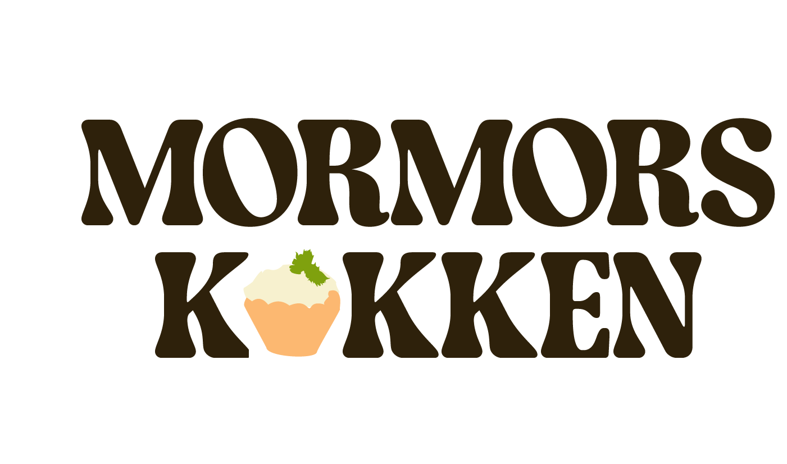
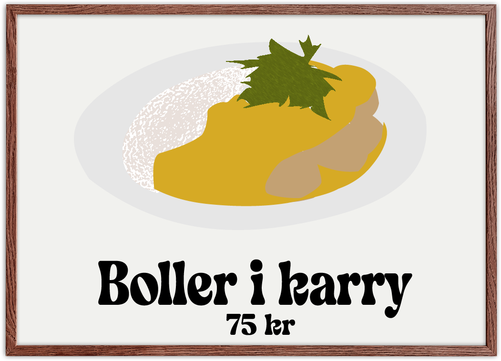
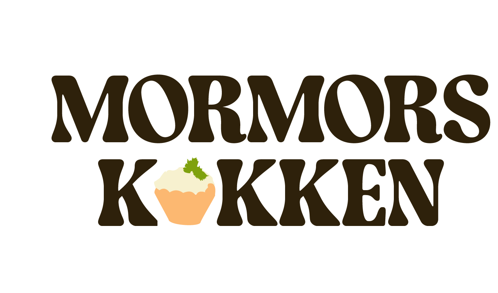
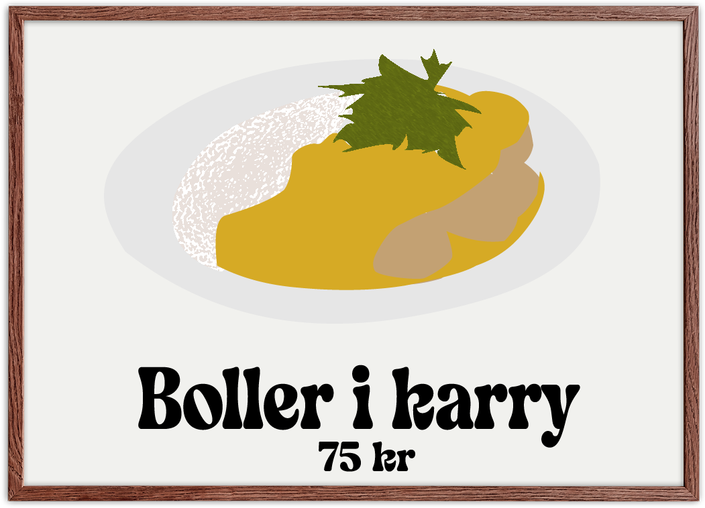

Hjemmelavede kødboller af kalv og flæsk i mild karrysovs med jasmin ris
3 stk klassiske sprøde tarteletter med høns i asparges
Mørbradgryde med champignon, løg, bacon, cocktailpølser og svinemørbrad i mild paprika-flødesovs med ris